Railyards stadium inspection
Source/current crop board for the White Sox September 2026 Railyards concept. Click any image to enlarge. The source coordinates and full discrepancy inventory live in stadium-inventory.md; the machine-readable record is stadium-elements.json.
Read the comparisons in this order: bowl silhouette and tier breaks, south facade height and outfield banks, clock lantern, then bridge and river edge relationships. Missing masses are geometry findings; color and exposure findings are listed separately.
Stadium comparisons
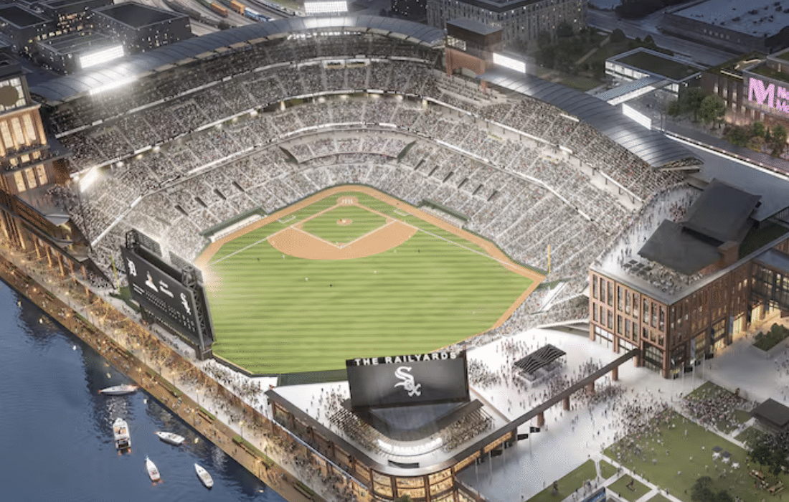
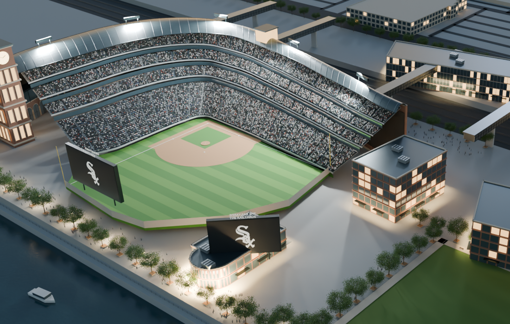
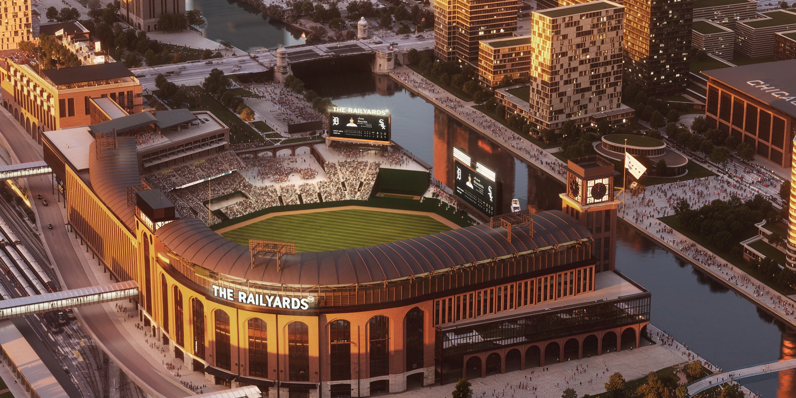
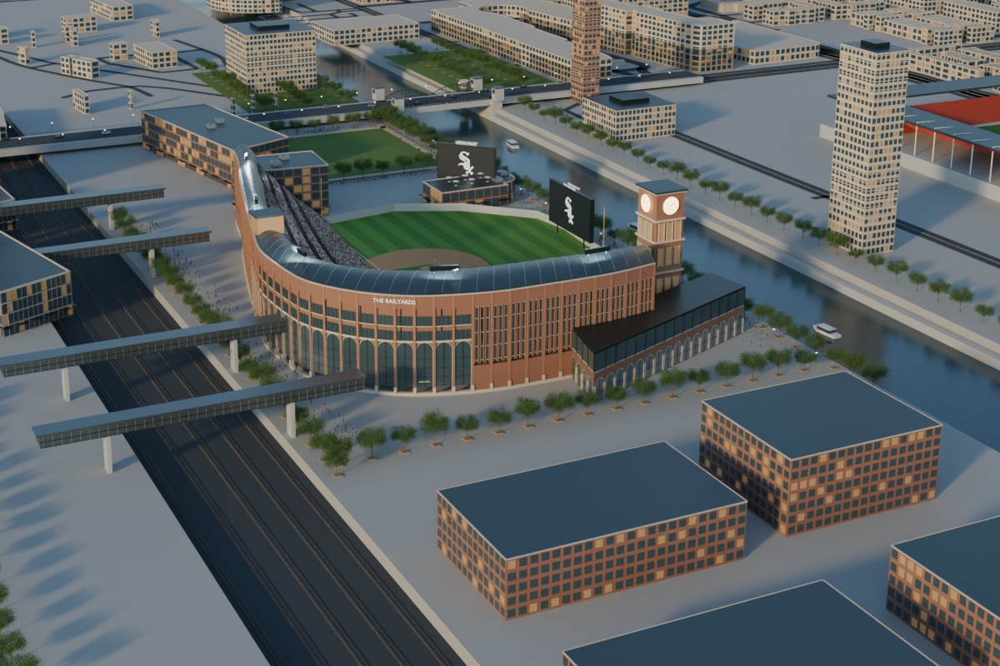
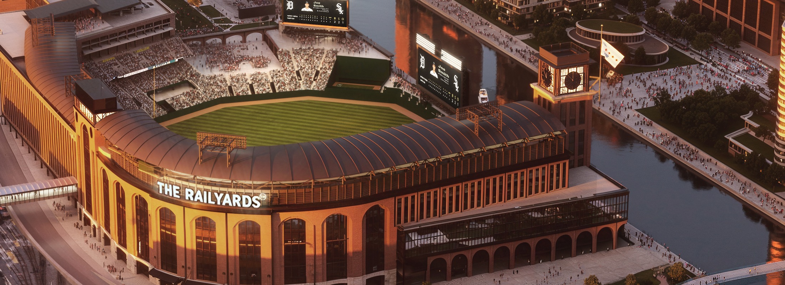
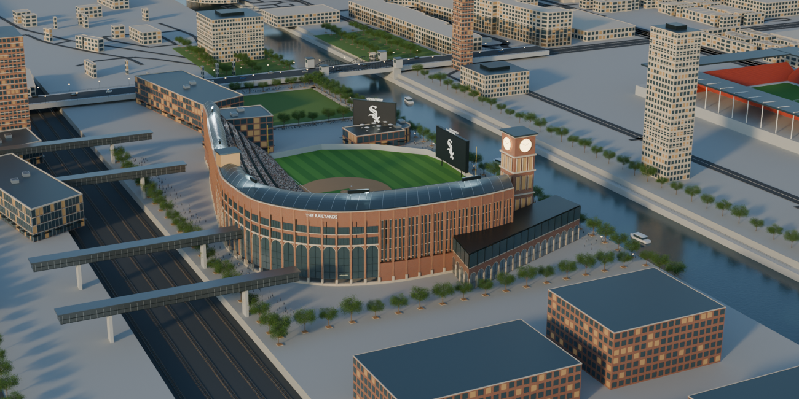
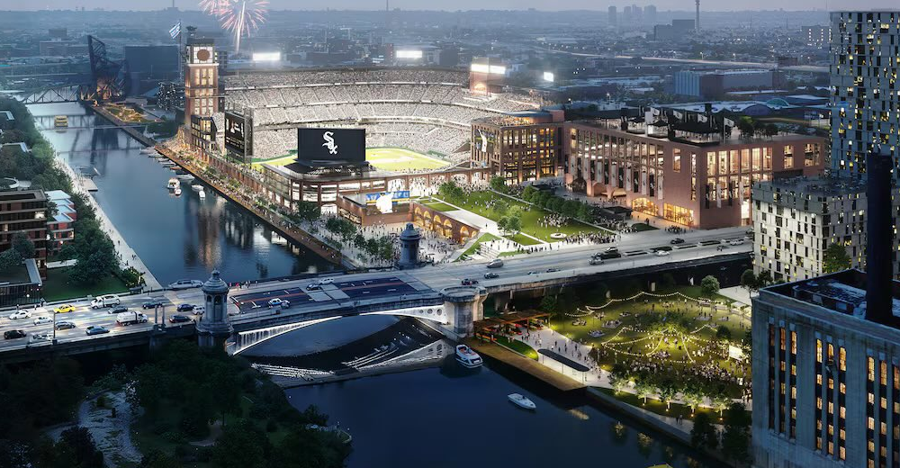
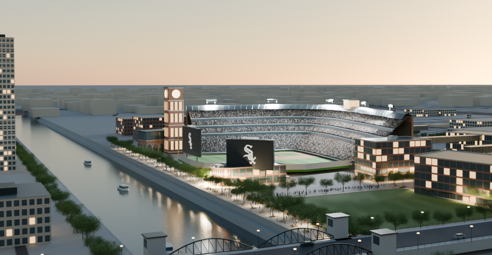
Immediate context comparisons
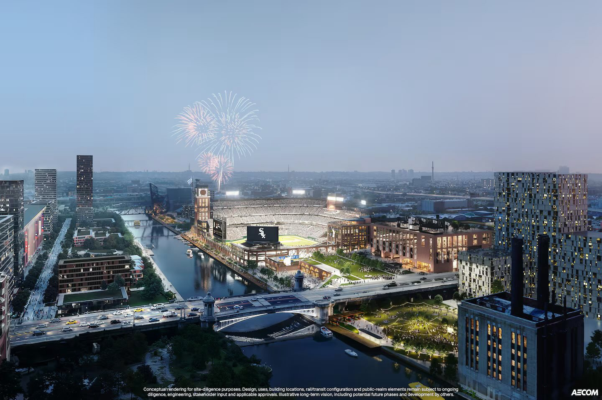
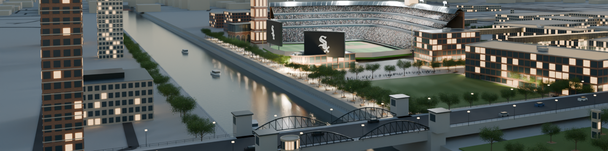
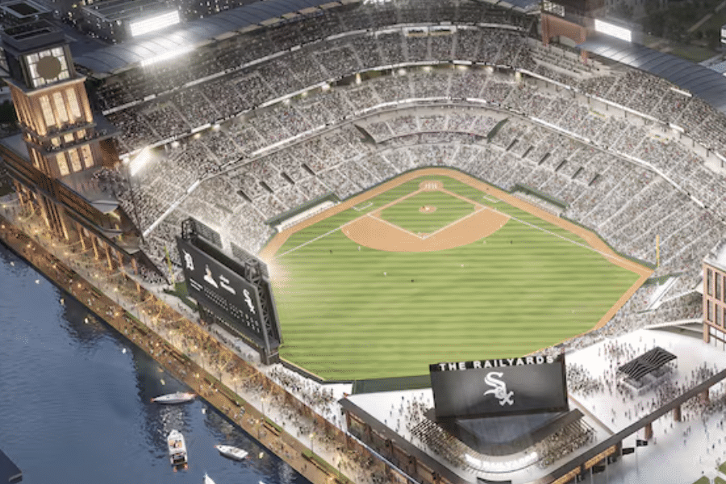
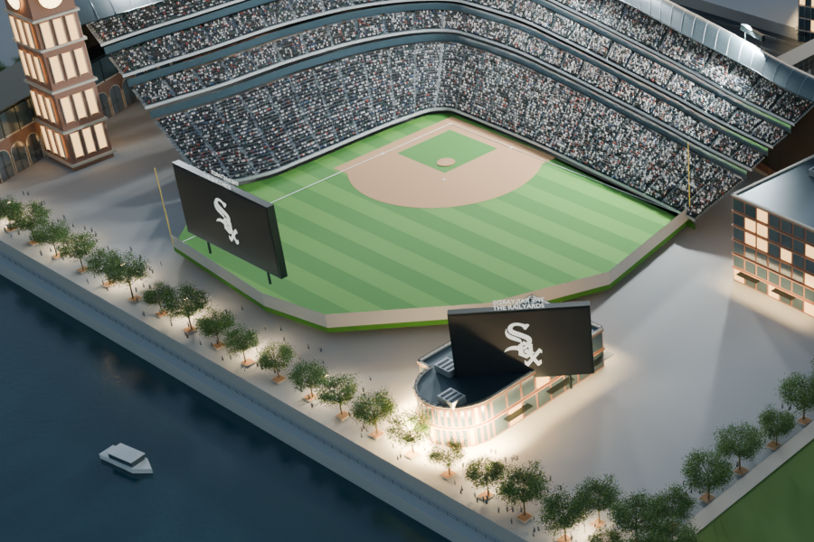
Highest impact checks
| IDs | Check | Preserve / correct |
|---|---|---|
| STAD-001–004 | Bowl, tiers, canopy | Preserve calibrated horseshoe and four t/z bands: 0–.34 / 14–24, .40–.49 / 27–30, .55–.65 / 33–36, .70–.93 / 39–47. Add fascia, ribs, aisles, and asymmetric ends. |
| STAD-005–006, 016 | River facade | Restore tall lower arches and deep brick mass, then dark glazed upper fascia and two-level arcade. Do not raise the roof to compensate for missing edge depth. |
| STAD-007–008 | Clock tower | Keep roof anchor [81.54, -76.38, 68]. Widen stepped masonry shaft; use glowing lantern glazing with dark clock faces. |
| STAD-003, 009–012, 017–018 | Outfield and roof structures | Add independent bleacher banks, structural scoreboard backs/supports, and floodlight gantries. Keep materials secondary to massing. |
| STAD-020–024 | Bridge / river relationships | Make links visibly land in concourses, rebuild the foreground drawbridge silhouette, and layer promenade, water steps, plaza, and lawn. |